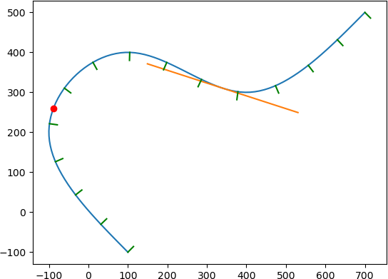

TinySpline is a small, yet powerful library for interpolating, transforming, and querying arbitrary NURBS, B-Splines, and Bézier curves. The core of the library is written in ANSI C (C89) with a C++ wrapper for an object-oriented programming model. Based on the C++ wrapper, auto-generated bindings for C#, D, Go, Java, Javascript, Lua, Octave, PHP, Python, R, and Ruby are provided.
Table of Contents
License
MIT License - see the LICENSE file in the source distribution.
Features
- Object-oriented programming model
- B-Splines of any degree and dimensionality
- Spline interpolation
- Cubic natural
- Centripetal Catmull–Rom
- Evaluation
- Knots
- Sampling (multiple knots at once)
- Equidistant points
- Components (find y for given x)
- Reparametrization by arc length
- Knot insertion (refinement)
- Sub-spline extraction
- Bézier curve decomposition
- (also known as subdivision)
- Derivative
- Degree elevation
- Computation of rotation minimizing frames
- Morphing
- Serialization (JSON)
- Vector math
Installation
Pre-built Binaries
Releases can be downloaded from the releases page. In addition, the following package manager are supported:
Conan (C/C++):
https://conan.io/center/tinyspline
NuGet (C#):
<PackageReference Include="tinyspline" Version="0.6.0.1" />
Go:
go get github.com/tinyspline/go@v0.6.0
Luarocks (Lua):
luarocks install --server=https://tinyspline.github.io/lua tinyspline
Maven (Java):
<dependency>
<groupId>org.tinyspline</groupId>
<artifactId>tinyspline</artifactId>
<version>0.6.0-1</version>
</dependency>
PyPI (Python):
python -m pip install tinyspline
RubyGems (Ruby):
Compiling From Source
See BUILD.md.
Getting Started
A variety of examples (tests) can be found in the [test](test) subdirectory.
The following listing shows a Python example:
from tinyspline import *
import matplotlib.pyplot as plt
spline = BSpline.interpolate_cubic_natural(
[
100, -100, # P1
-100, 200, # P2
100, 400, # P3
400, 300, # P4
700, 500 # P5
], 2) # <- dimensionality of the points
# Draw spline as polyline.
points = spline.sample(100)
x = points[0::2]
y = points[1::2]
plt.plot(x, y)
# Draw point at knot 0.3.
vec2 = spline.eval(0.3).result_vec2()
plt.plot(vec2.x, vec2.y, 'ro')
# Draw tangent at knot 0.7.
pos = spline(0.7).result_vec2() # operator () -> eval
der = spline.derive()(0.7).result_vec2().normalize() * 200
s = pos - der
t = pos + der
plt.plot([s.x, t.x], [s.y, t.y])
# Draw 15 normals with equidistant distribution.
knots = spline.equidistant_knot_seq(15)
frames = spline.compute_rmf(knots)
for i in range(frames.size()):
pos = frames.at(i).position
nor = pos + frames.at(i).normal * 20
# You can also fetch the tangent and binormal:
# frames.at(i).tangent
# frames.at(i).binormal
plt.plot([pos.x, nor.x], [pos.y, nor.y], 'g')
plt.show()
Result:

Documentation
The latest Doxygen documentation can be found at: https://msteinbeck.github.io/tinyspline/
The documentation of the C interface (https://msteinbeck.github.io/tinyspline/tinyspline_8h.html) is quite extensive and also serves as an entry point for the C++ interface documentation (as well as the documentation for the bindings created from the C++ interface).
Publications
If you use TinySpline in your research, please cite it as below.
@INPROCEEDINGS{Steinbeck:SANER:21,
author = {Steinbeck, Marcel and Koschke, Rainer},
booktitle = {2021 IEEE International Conference on Software
Analysis, Evolution and Reengineering (SANER)},
title = {TinySpline: A Small, yet Powerful Library for
Interpolating, Transforming, and Querying NURBS,
B-Splines, and Bézier Curves},
year = {2021},
pages = {572-576},
doi = {10.1109/SANER50967.2021.00068}
}
Other publications:
@INPROCEEDINGS{Steinbeck:VISSOFT:22,
author = {Steinbeck, Marcel and Koschke, Rainer},
booktitle = {2022 Working Conference on Software Visualization
(VISSOFT)},
title = {Edge Animation in Software Visualization},
year = {2022},
pages = {63-74},
doi = {10.1109/VISSOFT55257.2022.00015}
}
Theoretical Backgrounds
[1] is a very good starting point for B-Splines.
[2] explains De Boor's Algorithm and gives some pseudo code.
[3] provides a good overview of NURBS with some mathematical background.
[4] is useful if you want to use NURBS in TinySpline.